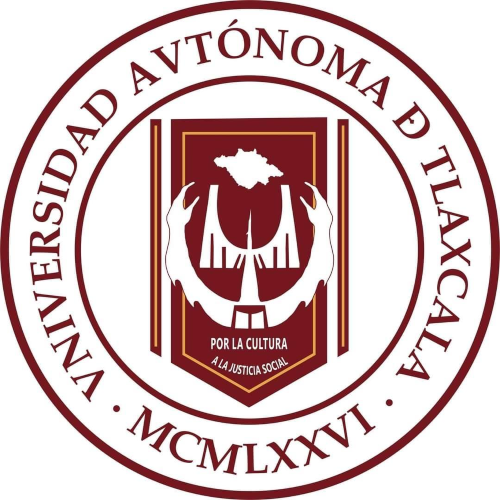
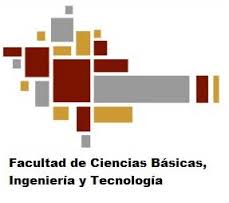
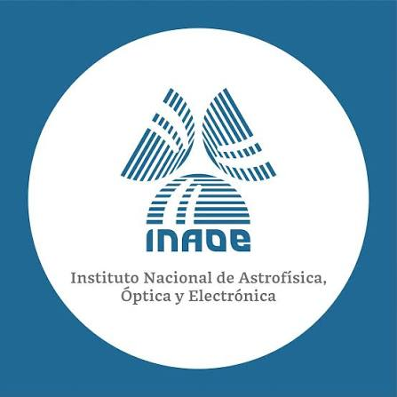
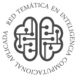
Un encuentro de aprendizaje e inteligencia computacional, donde la investigación se convierte en innovación y la innovación en nuevas posibilidades.
HORARIO DEL 7 AL 11 DE SEPTIEMBRE DEL 2026
UBICACIONES
Teatro Universitario
Universidad Autónoma de Tlaxcala
Facultad de Ciencias Básicas, Ingeniería y Tecnología
Universidad Autónoma de Tlaxcala
Sedes y Rutas de Acceso
Ubica fácilmente los puntos de llegada y las sedes oficiales del SENAIC 2026. Haz clic en cualquier tarjeta para abrir Google Maps.
Aeropuerto de la CDMX
Llegadas internacionales y nacionales.
TAPO, CDMX
Terminal de Autobuses de Pasajeros de Oriente.
Central ATAH, Tlaxcala
Auto Transportes Apizaco Huamantla.
Facultad de Ciencias Básicas Ingeniería y Teconología (FCBIyT) UATx
Sede principal: Talleres y Ponencias.
Residencia Universitaria UATx
Residencia Universitaria
Teatro Universitario
Teatro Universitaio UATx.
Galería
Administra y visualiza los momentos destacados del evento (Acceso de administrador).
Agregar Fotos
Inauguración Oficial
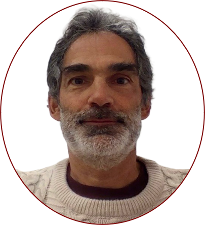
Conferencia Magistral: "¿Nos tenemos que preocupar de la IA?"
Dr. Eduardo Morales Manzanares
☕ Coffee Break
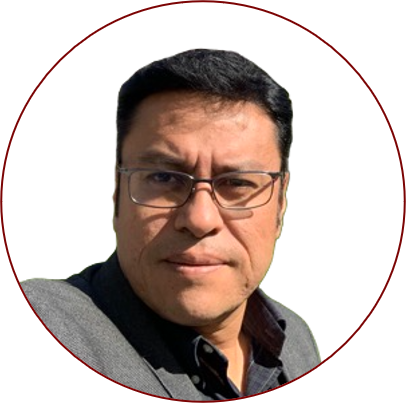
Conferencia Plenaria: "Responsible and Efficient AI: Lightweight Architectures for Real-World Intelligence in Smart Environments"
Dr. Miguel González Mendoza
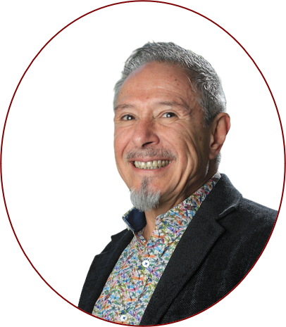
Conferencia Plenaria: "An Explainable Autoencoder Integrating Regression and Classification Trees for Anomaly Detection"
Dr. Raúl Monroy Borja
Conferencia Plenaria: "Inteligencia Artificial en el Análisis de Señales Cerebrales: Algunas Experiencias"
Dr. Alejandro Antonio Torres García
🍽️ Comida
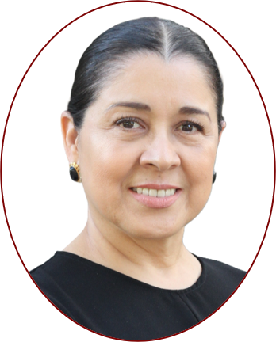
Conferencia Magistral: "IA y Ambientes de Aprendizaje: Diseñar, Aplicar y Medir"
Dra. María Lucía Barrón Estrada
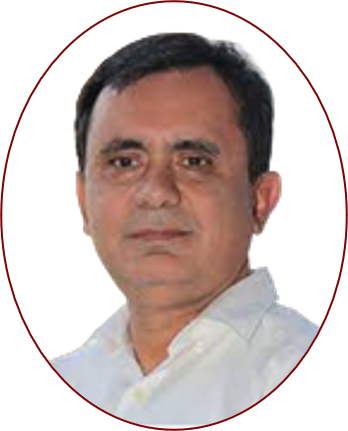
Conferencia Plenaria: "Sistemas Agénticos para Programación"
Dr. Ramón Zatarain Cabada
Conferencia Magistral: "Del Ajedrez al Nobel: pasado, presente y futuro de la Inteligencia Artificial"
Dr. Carlos Artemio Coello Coello
Conferencia Plenaria: "Hiperheurísticas Multi-objetivo"
Dr. Hugo Terashima Marín
☕ Coffee Break
Conferencia Plenaria: "Agricultura Inteligente"
Dr. Victor Alejandro González Huitrón
Conferencia Plenaria: "Apoyo al diagnóstico temprano en mamografías: un enfoque híbrido inteligente"
Dra. Alicia Morales Reyes
Conferencia Plenaria: "Ciberseguridad Inteligente"
Dra. Claudia Feregrino Uribe
🍽️ Comida
Conferencia Magistral: "Inteligencia Artificial aplicada a la solución de tareas en procesos industriales en México"
Dr. Juan Humberto Sossa Azuela
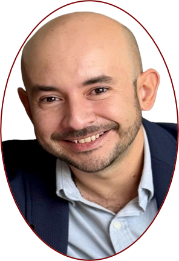
Conferencia Plenaria: "Predicciones futuras mediante Redes Neuronales Recurrentes: una aplicación en el clima"
Dr. Aldo Márquez Grajales
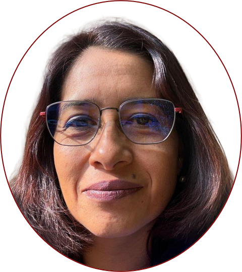
Conferencia Plenaria: "Pensamiento Computacional Hoy, Inteligencia Artificial Mañana"
Dra. Karina Mariela Figueroa Mora
Tutorial 1: "¿Porqué aprenden y son tan poderosas las redes neuronales"
Dr. Juan Humberto Sossa Azuela
Tutorial 2: "Introducción a la IA Verde"
Dra. Nancy Pérez Castro y Dra. Adriana Laura López Lobato
Tutorial 3: "Sistemas Difusos Base de la Inteligencia Computacional"
Dr. Carlos Alberto Reyes García
Tutorial 4: "Ciberseguridad Inteligente"
Dra. Claudia Feregrino Uribe
Tutorial 5: "IA para Robótica: de Redes Neuronales a Modelos Multimodales"
Dr. Iván Alejandro Gutierrez Giles
Tutorial 6: "Introducción a RAG (Retrieval-Augmented Generation)"
Dra. Karina Mariela Figueroa Mora
🤝 Conferencia Patrocinadores
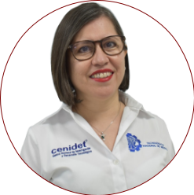
Conferencia Plenaria: "Ciencia de Datos en la Educación"
Dra. Yasmín Hernández Pérez
Tutorial 1: "Ciberseguridad Cuántica (La intersección de la computación cuántica y la ciberseguridad)"
Dr. Salvador Elías Venegas Andraca
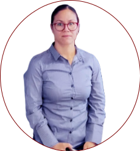
Tutorial 2: "Ciencia de Datos"
Dra. Daniela Alejandra Moctezuma Ochoa
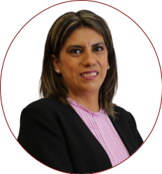
Tutorial 3: "Analizando sentimientos en textos: de las palabras a los grandes modelos de lenguaje"
Dra. Delia Irazú Hernández Farías
Tutorial 4: "IA Generativa para la Investigación Científica"
Dr. José Luis Morales Reyes y Dr. Héctor Gabriel Acosta Mesa
Tutorial 5: "Reconocimiento automático de aspectos paralingüísticos mediante información acústica"
Dr. Humberto Pérez Espinosa
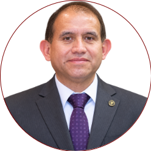
Tutorial 6: "¿Qué está viendo tu Red Neuronal? Implementación de Grad-CAM paso a paso"
Dr. Leopoldo Altamirano Robles y Dr. José de Jesús Velázquez Arreola
🤝 Conferencia Patrocinadores
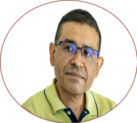
Conferencia Magistral: "Inteligencia Artificial en la Educación Superior, Retos y Oportunidades"
Dr. Efrén Mezura Montes
🏛️ Protocolo Aniversario FCBIyT
🗣️ Mesa de diálogo
☕ Coffee Break
Conferencia Plenaria: "IA Explicable"
Dr. Leopoldo Altamirano Robles
🎓 Ceremonia de Clausura
🥂 Brindis de Clausura
Sala ad honorem Dr. Rodolfo Ortiz Ortiz
Programa Escuela
Actividades a realizarse de manera exclusiva en las instalaciones de la Facultad de Ciencias Básicas, Ingeniería y Tecnología (FCBIyT).
Miércoles 09 de septiembre
Conferencia Plenaria: "Pensamiento Computacional Hoy, Inteligencia Artificial Mañana"
Dra. Karina Mariela Figueroa Mora
Tutorial 1: "¿Porqué aprenden y son tan poderosas las redes neuronales"
Dr. Juan Humberto Sossa Azuela
Tutorial 2: "Introducción a la IA Verde"
Dra. Nancy Pérez Castro y Dra. Adriana Laura López Lobato
Tutorial 3: "Sistemas Difusos Base de la Inteligencia Computacional"
Dr. Carlos Alberto Reyes García
Tutorial 4: "Ciberseguridad Inteligente"
Dra. Claudia Feregrino Uribe
Tutorial 5: "IA para Robótica: de Redes Neuronales a Modelos Multimodales"
Dr. Iván Alejandro Gutierrez Giles
Tutorial 6: "Introducción a RAG (Retrieval-Augmented Generation)"
Dra. Karina Mariela Figueroa Mora
🤝 Conferencia Patrocinadores
Jueves 10 de septiembre
Conferencia Plenaria: "Ciencia de Datos en la Educación"
Dra. Yasmín Hernández Pérez
Tutorial 1: "Ciberseguridad Cuántica (La intersección de la computación cuántica y la ciberseguridad)"
Dr. Salvador Elías Venegas Andraca
Tutorial 2: "Ciencia de Datos"
Dra. Daniela Alejandra Moctezuma Ochoa
Tutorial 3: "Analizando sentimientos en textos: de las palabras a los grandes modelos de lenguaje"
Dra. Delia Irazú Hernández Farías
Tutorial 4: "IA Generativa para la Investigación Científica"
Dr. José Luis Morales Reyes y Dr. Héctor Gabriel Acosta Mesa
Tutorial 5: "Reconocimiento automático de aspectos paralingüísticos mediante información acústica"
Dr. Humberto Pérez Espinosa
Tutorial 6: "¿Qué está viendo tu Red Neuronal? Implementación de Grad-CAM paso a paso"
Dr. Leopoldo Altamirano Robles y Dr. José de Jesús Velázquez Arreola
🤝 Conferencia Patrocinadores
Conferencias Magistrales
Conferencia Magistral: "¿Nos tenemos que preocupar de la IA?"
Dr. Eduardo Morales Manzanares
Conferencia Magistral: "IA y Ambientes de Aprendizaje: Diseñar, Aplicar y Medir"
Dra. María Lucía Barrón Estrada
Conferencia Magistral: "Del Ajedrez al Nobel: pasado, presente y futuro de la Inteligencia Artificial"
Dr. Carlos Artemio Coello Coello
Conferencia Magistral: "Inteligencia Artificial aplicada a la solución de tareas en procesos industriales en México"
Dr. Juan Humberto Sossa Azuela
Conferencia Magistral: "Inteligencia Artificial en la Educación Superior, Retos y Oportunidades"
Dr. Efrén Mezura Montes
COMITÉ DE ORGANIZACIÓN
LOCAL
POR LA FACULTAD DE CIENCIAS BÁSICAS, INGENIERÍA Y TECNOLOGÍAS DE LA UNIVERSIDAD AUTÓNOMA DE TLAXCALA (UATLAX)
- Dr. Ever Juárez Guerra
- M.C. Carolina Rocío Sánchez Pérez
- Dr. Alberto Portilla Flores
- M.C. Aydee Rojas Escobar
- M.C. Carlos Santacruz Olmos
- M.C. Esmeralda Méndez Hernández
- M.I.S.C.I. Everardo Carlos Guevara Hernández
- Dr. Francisco Javier Albores Velasco
- Dr. Jorge Alberto Sánchez Martínez
- M.C. Juventino Montiel Hernández
- Dra. Leticia Flores Pulido
- M.C. Ma. Guadalupe Cervantes Castillo
- M.C. Ma. Guadalupe Cruz Becerril
- Dra. María del Rocío Ochoa Montiel
- M.C. María Margarita Labastida Roldán
- M.C. Marlon Luna Sánchez
- Dra. Marva Angélica Mora Lumbreras
- M.I.A. Norma Sánchez Sánchez
- Ing. Patricia Trejo Xelhuantzi
- M.C. Patrick Hernández Cuamatzi
- Ing. Rogelio Cervantes Hernández
- M.T.E. Xochipilli Acoltzi Xochitiotzi
NACIONAL
POR LA RED TEMÁTICA EN INTELIGENCIA COMPUTACIONAL APLICADA, REDICA
- Dr. Carlos Alberto Reyes García, CCC-INAOE
- Dra. María Lucía Barrón Estrada, Tecnológico Nacional de México, Instituto Tecnológico de Culiacán
- Dra. Karina Mariela Figueroa Mora, Universidad Michoacana de San Nicolás de Hidalgo
- Dra. Yasmín Hernández Pérez, Tecnológico Nacional de México, Centro Nacional de Investigación y Desarrollo Tecnológico
- Dr. Efrén Mezura Montes, Director del Instituto de Investigaciones en Inteligencia Artificial, Universidad Veracruzana
- Dra. Alicia Morales Reyes, CCC-INAOE
- Dr. Ramón Zatarain Cabada, Tecnológico Nacional de México, Instituto Tecnológico de Culiacán
Mesa de Diálogo
Próximamente más información sobre panelistas.
Contacto
Ponte en contacto con las instituciones organizadoras del SENAIC 2026.
Contacto UATlax
Próximamente más información sobre medios de contacto locales.
Contacto INAOE
Dr. Carlos Alberto Reyes García
Teléfono: +52 222 2663100 Ext. 8315
Correo: kargaxii at inaoep dot mx
Dra. Alicia Morales Reyes
Teléfono: +52 222 2663100 Ext. 8204
Correo: a.morales at inaoep dot mx
Instituto Nacional de Astrofísica, Óptica y Electrónica
Coordinación de Ciencias Computacionales
Luis Enrique Erro #1
Tonantzintla, Puebla
72840, México